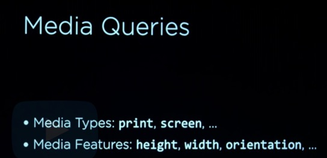
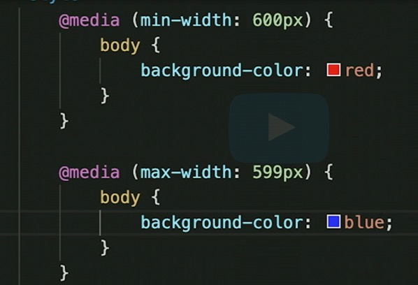
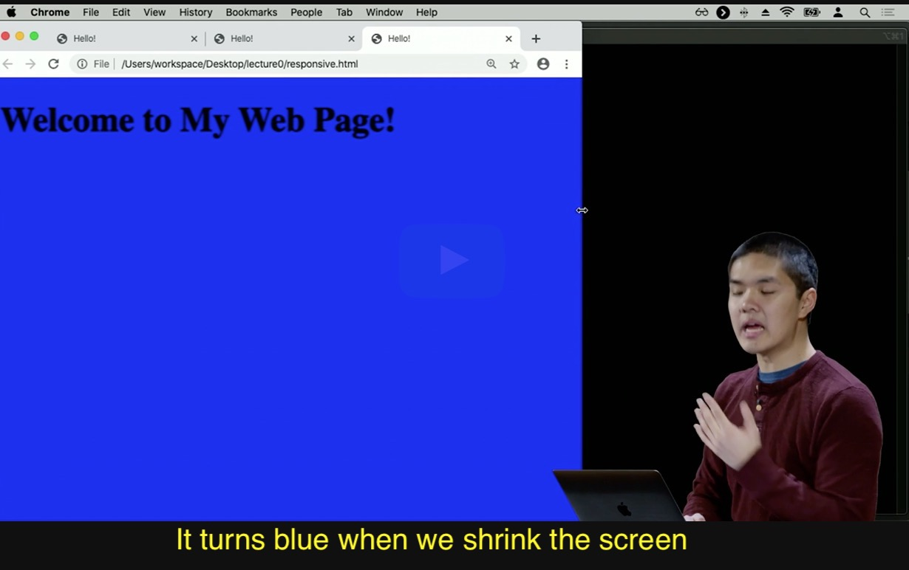

Media queries are all about controlling how our page is going to look depending on how we render that particular page, or what size screen we're rendering that page on.
Example: I want to say that if the size of the screen is a certain width, then I want to style the page in one way. And if the size of the page is a different width, then I might want to style the page in a different way.
  